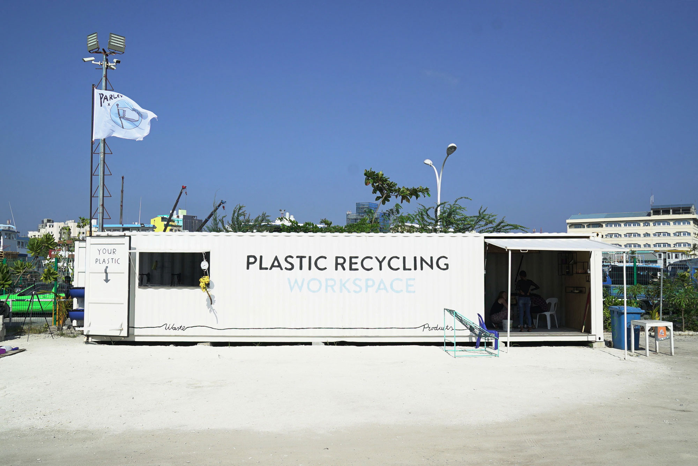

We joined forces with Parley for the Oceans to turn ocean plastic into Precious Plastic in Male city, capital of the Maldives. Although small (with a population of around 115,000) the city is flooded with waste - mostly plastic and styrofoam as everything is imported. Currently, there are very little tools and facilities for people to recycle their plastic waste, so we created a plastic recycling workspace inside a shipping container to educate locals on recycling and show how to transform plastic waste into valuable things.


The project first started back in 2017 during the development of Precious Plastic version 3. We sourced a 40 ft container from Rotterdam Harbour, (easier than expected) and started converting it into a Precious Plastic workspace 🙂Jerry started building the machines while Dave worked on transforming it into a living recycling centre. It took us around 2 months to transform the container, with a final push from our awesome 30+ community members that came from all over Europe to help us with painting 💪
Upon a few delays and hiccups, a year went by (sorry 2018) and finally in January 2019 a team of three from Precious Plastic including Dave, Charlotte (V4 member) and Jerry (V3 member) flew out to Male for 10 days to install the container, ensure all machines were working properly, repaint where needed and run an event to teach locals all about plastic recycling.
After 5 days of fixing the container, we held an event with 25 children from a local school, giving a tour of the container, explaining how the machines work, and teaching the kids about plastic recycling and the many possibilities of working with plastic. We also spent a few days training the locals at WAMCO (the waste management site where the container was located) so they could run the workspace on their own.
The container is now a recycling workspace and research centre to learn about plastic coming from the ocean. People from Precious Plastic and Parley for the Oceans will work in the container to research, test, experiment and prototype solutions to turn ocean plastic into a valuable material.
We like to keep things open and clear. Precious Plastic was offered 20.000€ from Parley For the Oceans to buy, design and develop the container. Shipping, travel and accommodation was also taken care by Parley. This is how we spent the money:
⁃1.5K for container
⁃7K to create the recycling container
-2K for shipping
⁃2K expenses on the ground
⁃2K video making

For this pilot we worked with Parley for the Oceans, an organisation doing great work to create global awareness around the plastic problem and the opportunities connected with it. In the founder’s own words “we declared purpose the new luxury and that ocean plastic is the most valuable material”. And we very much share and live that vision, a vision where plastic is precious and valuable.

As always going to a new country across the planet comes with lots of new challenges and troubles, but as you can imagine lots of learnings. Here is a few:
1. Rust: A lot of it. Maybe obvious, but it was something we hadn’t encountered before, everything had to be sanded down and repainted, and we had to buy a lot of new stainless steel nuts and bolts.
2. Plumbing parts hard to find: As everything rusts from the ocean, it seems that all plumbing parts are made from plastic so they can last, so finding steel parts was tricky!
3. Small, but handy: Even though Male is a small island there were lots of hardware stores and handymen we could count on.Converting a container is fun, but takes time.
4. Containers are big metal boxes, and with that comes a lot of work.
5. The temperature of the container: It was surprisingly cool and fresh to work in, we imagined it being an oven but it wasn’t actually that bad.
6. Male: Male is not how you imagine the Maldives, forget the white beaches and sand, this is just pure concrete, skyscrapers and chaos.
7. A lot of PET available: From our visit, we noticed that Maldivian people don’t really drink the tap water, so there is an abundance of imported plastic drinking bottles - so a lot of precious material lying around.
8. Painting the container: takes longer than you think, and it costs a lot - around €700.
9. Maldivian people are very helpful: every morning they would show up a few minutes after us in big groups all wanting to work and contribute towards the project - even if they had no idea what Precious Plastic was :)
10. More conscious than we thought: ‘Plastic bag free’ schools and similar incentives that made us smile. It’s really nice to see this kind of thinking in schools.
11. Cooling time: Moulds take a lot longer to cool in the Maldives, so always have a bucket of cold water nearby if you work in similar conditions.
12. Teaching: We found that as the compression oven is a much slower process, the injection machine and extruder are better for teaching as you get faster results.
13. Parata is good food: Better than chapati, but it’s very oily.
14. Shipping: shipping a container halfway across the world is simpler than you think, also shipping machine parts.
15. Placing the container level is important: if not, things like the big door cannot be closed properly. So if you want to take full advantage of your container it is best to place it on a level surface and add support where needed.
16. Making beam moulds was simpler than we imagined: We sourced a scrap rectangular tube, welded it onto the metal sheet at one end, and to our surprise, it worked the first time!
17. Bura Budah music: it was fun to listen to music from the Maldives, instead of Western music we usually listen to.
Pilots are unique opportunities to test Precious Plastic ideas, technologies and processes on the ground. We collaborate with different institutions, partners and organisations to create Precious Plastic workspaces around the world.
We do pilots for two main reasons: research and testing. Working in different countries, with people of completely different cultures, realities, needs and drives help us understand the problem in a more informed and practical way. This field research is then used to develop Precious Plastic in more meaningful, accessible and applicable manners enabling ever more people around the world to work with plastic waste. While on the ground we also stress test our ideas, machines and systems to try and make successful plastic recycling workspaces in different parts of the world.
We like to make the mistakes, fail, pivot and find a better solutions. So others like yourself don’t need to make the same mistakes again. Trying to make plastic recycling easier and more affordable for others around the world.